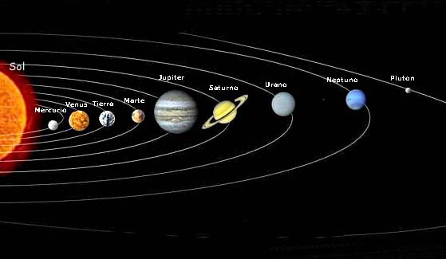

El sistema solar está formado por los siguientes planetas:
Cuando pulsamos en la imagen del Sol, deberemos trasladarnos a una zona de la página en la que aparece lo siguiente:
El Sol se formó hace 4.650 millones de años y tiene combustible para 5.000 millones más. Después, comenzará a hacerse más y más grande, hasta convertirse en una gigante roja. Finalmente, se hundirá por su propio peso y se convertirá en una enana blanca, que puede tardar un billón de años en enfriarse. Se formó a partir de nubes de gas y polvo que contenían residuos de generaciones anteriores de estrellas. Gracias a la metalicidad de dicho gas, de su disco circumestelar surgieron, más tarde, los planetas, asteroides y cometas del Sistema Solar. En el interior del Sol se producen reacciones de fusión en las que los átomos de hidrógeno se transforman en helio, produciéndose la energía que irradia. Actualmente, el Sol se encuentra en plena secuencia principal, fase en la que seguirá unos 5000 millones de años más quemando hidrógeno de manera estable.
Si pulsamos en la imagen de Mercurio aparecerá lo siguiente:
Mercurio es el planeta del Sistema Solar más próximo al Sol y el más pequeño (a excepción de los planetas enanos). Forma parte de los denominados planetas interiores o rocosos. Mercurio no tiene satélites. Se conocía muy poco sobre su superficie hasta que fue enviada la sonda planetaria Mariner 10 y se hicieron observaciones con radares y radiotelescopios.
Si pulsamos en la imagen de Jupiter aparecerá lo siguiente:
Júpiter es el quinto planeta del Sistema Solar. Forma parte de los denominados planetas exteriores o gaseosos. Recibe su nombre del dios romano Júpiter (Zeus en la mitología griega). Se trata del planeta que ofrece un mayor brillo a lo largo del año dependiendo de su fase. Es, además, después del Sol, el mayor cuerpo celeste del Sistema Solar, con una masa casi dos veces y media la de los demás planetas juntos (con una masa 318 veces mayor que la de la Tierra y 3 veces mayor que la de Saturno).
Al pulsar en la imagen de Saturno nos desplazamos hasta el siguiente contenido:
Saturno es un planeta visiblemente achatado en los polos con un ecuador que sobresale formando un esferoide ovalado. Los diámetros ecuatorial y polar son respectivamente 120.536 y 108.728 km. Este efecto es producido por la rápida rotación del planeta, su naturaleza fluida y su relativamente baja gravedad. Los otros planetas gigantes son también ovalados pero no en tan gran medida. Saturno posee una densidad específica de 690 kg/m³ siendo el único planeta del Sistema Solar con una densidad inferior a la del agua (1000 kg/m³). Si existiera un recipiente lleno de agua con las dimensiones suficientes para introducir a Saturno, este flotaría. El planeta está formado por un 90% de hidrógeno y un 5% de helio. El volumen del planeta es suficiente como para contener 740 veces la Tierra, pero su masa es sólo 95 veces la terrestre, debido a la ya mencionada densidad media relativa.